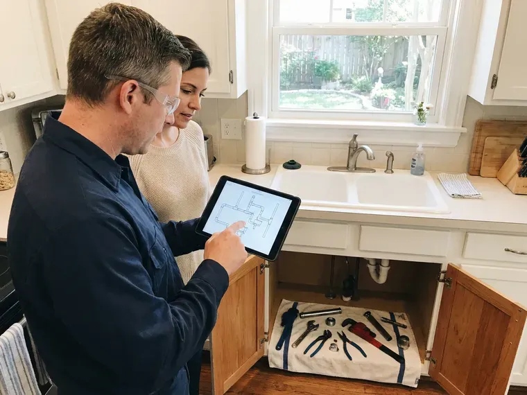

Tankless Water Heater Maintenance in Hempstead, NY
Getting lime scale error codes or cold water sandwiches in Hempstead, NY? Our plumbers flush, clean and test your tankless heater in a single visit.
- Fast Descaling Appointments Available
- Navien, Rinnai and Noritz Trained
- Satisfaction Guaranteed
- Licensed Plumbers

Clear the Scale From Your Tankless Heater in Hempstead, NY.
Our skilled technicians are ready to provide the thorough maintenance your system needs.
Professional Tankless Water Heater Maintenance in Hempstead, NY
At HCL Plumbing, we understand the specific needs of tankless water heaters in Hempstead, NY. Regular maintenance is crucial to prevent mineral scaling from local water conditions and to keep your energy bills in check. Our seasoned plumbers provide thorough inspections and necessary upkeep, so your unit delivers reliable hot water for years.
Our expertise includes:
- Ventilation Pathway Inspection
- Descaling and Flush Service
- Inspect gas lines, vents and igniters.

Additional Plumbing Maintenance Services in Hempstead, NY
Our maintenance and specialty plumbing services in Hempstead, NY protect your home year-round and extend the life of every system.


Customers
Why Choose HCL Plumbing for Tankless Water Heater Maintenance in Hempstead, NY?
Ignoring regular maintenance can lead to reduced efficiency, higher energy bills and even premature failure of your tankless water heater. We help you prevent costly repairs and keep your unit performing at its best.
- Extended Lifespan, Regular flushing and descaling limit corrosion and wear, greatly extending your unit's working life.
- Brand Trained, We work on Navien, Rinnai, Noritz, Takagi and Rheem tankless models all the time.
- Warranty Protection, Many manufacturers require periodic maintenance to keep your warranty valid, protecting you against future repair costs.
Citywide Coverage
HCL Plumbing proudly serves every neighborhood and surrounding community in Hempstead. Whether you're in the heart of downtown or on the outskirts, our team is ready to provide prompt and reliable tankless water heater maintenance services. We understand the varied plumbing needs across our service areas and are equipped to handle them all.
Experienced Team
Our team of plumbers at HCL Plumbing is thoroughly trained and certified in tankless water heater technologies. With years of hands-on experience with local plumbing challenges, they are skilled at diagnosing and resolving any maintenance issue, from complex flow sensor problems to heat exchanger descaling.
Safety-First Approach
Electric tankless units draw heavy current, so we inspect breakers and wiring connections for heat damage. We follow manufacturer and local code requirements for every adjustment.
Trusted Certified Hempstead Plumbing Services Professionals
At HCL Plumbing, we take pride in providing licensed, certified plumbing services throughout Hempstead, NY. Backed by recognized industry credentials, our experienced plumbers combine technical skill with genuine customer care. Whether it is repair, installation, or maintenance, we follow strict safety and quality standards to deliver long-lasting results you can trust.
Call Us Now PHCC Plumbing Contractor Recognition
PHCC Plumbing Contractor Recognition Better Business Bureau (BBB) Accreditation
Better Business Bureau (BBB) Accreditation Angi Certified Pro
Angi Certified Pro ISO 9001 Quality Management Certification
ISO 9001 Quality Management CertificationReliable Tankless Water Heater Maintenance Services in Hempstead, NY
Noritz Tankless Water Heater Descaling in Hempstead, NY
Noritz tankless heaters are known for their robust build. Our descaling service for Noritz units focuses on their intricate heat exchangers, which can be prone to scale buildup from mineral-rich water. We use manufacturer-approved descaling agents and follow precise flushing procedures to avoid damage. We also inspect the fan motor and exhaust system for proper airflow, a frequent area for attention in Hempstead.

Error Code Diagnostics in Hempstead, NY
Codes like Rinnai LC, Navien E003 or Noritz 90 tell us a lot about what is going wrong. We read the code history, test flame rods, flow sensors and igniters and check gas pressure at the inlet. Many codes trace back to scale or a dirty filter and clear after maintenance. When a part has failed we explain the repair and the cost before doing any work.
Commercial Tankless Rack Maintenance in Hempstead
Restaurants, salons and multi-family buildings often run several tankless units linked together. Commercial racks see heavy use and scale faster than home units. We descale each heater, check cascade controls and balance the load across the system. Quarterly or semiannual service keeps the hot water flowing during busy hours.
Noritz Tankless Water Heater Tune-Ups in Hempstead, NY
Noritz tankless water heaters are sturdy systems, but they still require annual tune-ups to maintain their performance through every season. Our maintenance includes checking the unit's exhaust system, ensuring proper combustion air intake and verifying the integrity of the heat exchanger. We also calibrate the temperature and flow settings for the best efficiency and comfort, preventing common issues like cold water sandwiches.
Annual Tankless Water Heater Inspection in Hempstead
An annual inspection of your tankless water heater in Hempstead is a smart measure against costly repairs. Our thorough check includes examining the gas line connections for leaks, testing the pressure relief valve, inspecting the igniter and cleaning the air intake filter. We look for any signs of wear or potential failure, giving you recommendations to keep your system running smoothly all year long, through hot spells and cold snaps alike.
Emergency Tankless Water Heater Service in Hempstead, NY
Even with regular maintenance, unexpected issues can arise with tankless water heaters. If you experience a sudden loss of hot water, error codes or unusual noises from your unit in Hempstead, NY, HCL Plumbing offers emergency services. We focus on rapid response to diagnose and resolve critical problems, often related to clogged heat exchangers or faulty sensors, restoring your hot water supply quickly and safely.
Preventative Maintenance for All Tankless Brands in Hempstead, NY
HCL Plumbing provides preventative maintenance for all major tankless water heater brands, including Navien, Bosch and State, across Hempstead, NY. Our technicians are cross-trained to handle the specific requirements of each manufacturer. We perform descaling, filter cleaning and component checks tailored to your specific model, ensuring long-term reliability and manufacturer warranty requirements, regardless of the brand.

Cost-Benefit Analysis for Maintenance in Hempstead
Investing in regular tankless water heater maintenance in Hempstead typically pays for itself through reduced energy bills and avoided repair costs. A well-maintained unit can save 10 to 20 percent on energy compared to a neglected one. We provide a clear breakdown of maintenance costs versus the potential savings from extended lifespan and improved efficiency, helping you make an smart decision for your Hempstead property.
Trusted Tankless Water Heater Maintenance Near Me in Hempstead, NY
Looking for reliable tankless water heater maintenance near me in Hempstead, NY? HCL Plumbing has local plumbers ready to serve your area. Our well-placed teams offer a quick response time, bringing expert service right to your doorstep and preventing minor issues from escalating into major problems.
Homeowners looking for tankless maintenance near me can count on HCL Plumbing for quick scheduling in Hempstead. Our trucks carry descaling pumps, solution and isolation valve kits. Most tankless heaters get fully serviced in one stop.
HCL Plumbing at a Glance
- Licensed and insured plumbers serving Hempstead, NY
- 24/7 emergency service with same-day scheduling
- Clear written estimates, no hidden fees
- 4.8-star rated by 520+ New York customers
Hempstead Map
Hempstead Information
- Population
- 58,225
- Area codes
- Local
- Service area
- Hempstead and communities within 40 miles
- Nearby
- Levittown, New York, New Rochelle, Mount Vernon
Regular tankless water heater maintenance is particularly important for homes in Hempstead, NY, where minerals in the water can steadily lead to scale buildup and reduced efficiency.
Expert Services
Trust our professionals for reliable HCL Plumbing solutions in Hempstead, NY.
Our Specialized Plumbing Services in Hempstead, NY
At HCL Plumbing, we provide a complete range of plumbing services across Hempstead, NY. From leak detection to full system installations, our team ensures fast, precise, and affordable service for both residential and commercial properties. Explore our core services below:


How Our Tankless Water Heater Maintenance Process Works in Hempstead, NY
Our tankless maintenance follows the manufacturer service steps, tailored for the water in your home.
Request a Quote
Contact us at (716) 396-7101 or through our website to schedule your tankless water heater maintenance. Our friendly staff will gather the needed details and provide a transparent quote.
On-Site Inspection
A certified technician arrives at your Hempstead home to perform a thorough inspection of your tankless unit, checking for any visible issues, leaks or error codes.
Descaling & Flushing
We perform a thorough descaling and flushing of the heat exchanger to remove mineral buildup, a common problem with hard water, restoring efficiency.
Frequently Asked Questions About Tankless Water Heater Maintenance in Hempstead
Most tankless descaling visits cost $175 to $350, depending on brand and access. Adding an isolation valve kit usually runs $150 to $300 more.
A typical tankless water heater maintenance service, including flushing and inspection, generally takes 1 to 2 hours. The exact time can vary depending on the unit's condition, the amount of scale buildup and whether any minor adjustments or repairs are needed during the visit.
Rinnai shows LC codes, Navien may show E003 or E030 and Noritz often shows 90 or 99 when scale or airflow is a problem. These codes typically clear after proper cleaning.
Most visits take one to two hours, including the descaling cycle. Installing isolation valves on the same trip adds roughly an hour.
Most tankless water heater manufacturers recommend annual maintenance to support good performance and extend the unit's lifespan. In areas with harder water, more frequent checks, perhaps every 6 to 9 months, might help to prevent excessive scale buildup.
Absolutely. Regular maintenance greatly extends the lifespan of your tankless water heater, often to the manufacturer's estimated 20 years or even longer. By preventing mineral buildup and keeping all components working correctly, you avoid premature wear and tear, protecting your investment.
Many tankless water heater manufacturers require proof of regular, professional maintenance to keep your unit's warranty valid. Skipping annual service can void the warranty, leaving you responsible for costly repairs that would otherwise be covered. Always check your specific warranty terms.
A standard tankless water heater maintenance service, including flushing and inspection, typically takes 1 to 2 hours. The exact time can vary depending on the unit's condition, the amount of scale buildup and any unexpected issues encountered during the service.
What People Are Saying About Our Plumbing Experts?

James P.
Our commercial plumbing system had a leak under the sink, and HCL Plumbing handled it professionally. The plumbers arrived quickly and restored everything without disruption to our customers.
Commercial Plumbing · Hempstead, NY
Sofia M.
Two new toilets installed in one visit, no mess left behind, and the tech even adjusted a faucet he noticed was dripping. Fair pricing and really friendly.
Toilet Installation · Levittown, NYLaura S.
I scheduled a water heater replacement, and the team made the process smooth and affordable. The new unit works perfectly, and they cleaned up after completing the job.
Water Heater Replacement · Yonkers, NY
Patricia H.
We had a slab leak that two other companies could not find. HCL Plumbing located it in under an hour, explained our options, and the price matched the quote to the dollar.
Slab Leak Repair · Hempstead, NY
Emily R.
I called HCL Plumbing for plumbing repair, and the technician was fast, polite, and thorough. They explained the problem clearly and fixed it the same day. I will definitely hire them again. Highly recommended!
Plumbing Repair · New Rochelle, NY
Daniel K.
A pipe burst at 11 pm and they actually answered. The plumber showed up within the hour, shut everything down, and had us back to normal the next morning. Could not ask for more.
Emergency Plumbing · Levittown, NY